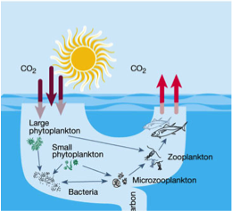
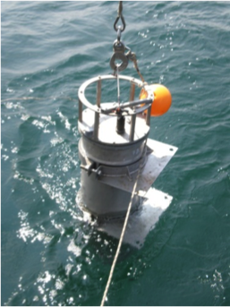
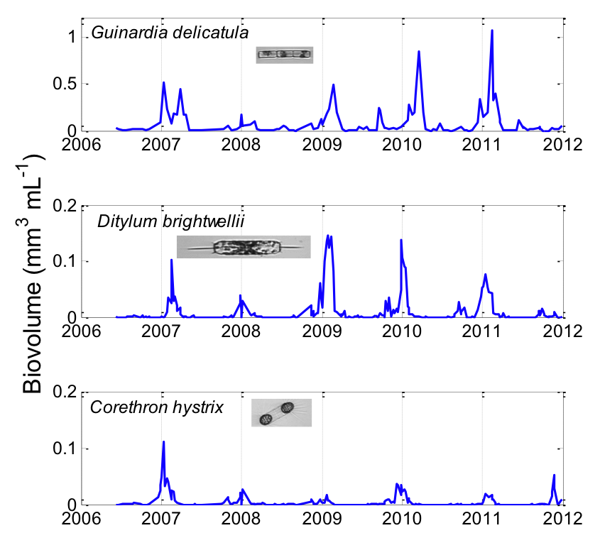

{kind=link}
{kind=link}
{kind=link}
{kind=link}


|
1 A drop of seawater contains hundreds, even
thousands of tiny phytoplankton, organisms so small they can only be
seen with a microscope. Despite being so tiny they are incredibly
interesting and beautifully diverse. According to the scientists
studying them at WHOI, that diversity is so beautiful that everyone
should be able to peek into the invisible world of plankton. And that
is being made possible by a new invention called Imaging FlowCytobot.
|

Modified from Chisholm 2000
|
2
Like land plants, phytoplankton use energy from the sun to
photosynthesize and make new organic matter. And they use up carbon
dioxide and produce oxygen along the way. In fact, these single-celled
microbes produce half the oxygen we breathe every day. Phytoplankton
thrive under all kinds of conditions everywhere in the ocean where
even the tiniest amount of sunlight penetrates – from icy waters of
the Arctic to balmy tropical reefs. They manage this by being
extremely diverse—they come in a huge range of shapes and sizes and
have evolved many intricate patterns of life.
|
|
|
Photo credit: T. Kleindinst
|
3
WHOI scientists are working to show off that diversity by opening
access to images being produced by Imaging FlowCytobot, or IFCB for
short. IFCB is an automated underwater microscope designed by Rob
Olson and Heidi Sosik. They build IFCBs from lasers, video cameras,
microscope parts, and small computers. IFCB can take more than 10
pictures per second as phytoplankton and other small particles are
speeding by the video camera in a thin stream of seawater.
|

Photo credit: T. Crockford
|
4
At the Martha's Vineyard Coastal Observatory, IFCBs are working around
the clock in the ocean to capture high resolution images of
plankton and relay them to shore. At the IFCB data dashboard web site,
anyone can access those images within minutes of collection. Plus browse
hundreds of millions of images taken over the last 6 years.
|
|
5
This video shows images captured by IFCB from about a ¼ teaspoon of ocean water.
IFCB takes a picture whenever it detects chlorophyll in the stream of water
flowing past its camera. The video shows where IFCB found plankton and other
objects in each picture it took. A system of pumps, filters, and small
tubes ensures that only a few objects flow past the camera at a time.
|
 |
6
For scientists, this series of images provides a new way to view the
natural ebb and flow of phytoplankton communities as the seasons
change and years go by. Long time series like these show us how the
invisible world of plankton adjusts to environmental
changes. Ultimately this knowledge will help us understand the
processes that produce the oxygen we breathe and support the ocean
food webs that include fish, whales, and seabirds.
|